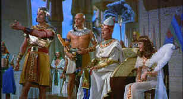

| The
Ten Commandments/B+,B+ |
| Paramount/1956/220m/WS
1.85 |
You know you are in for a different
experience when director Cecil B. DeMille steps from behind a grand curtain to introduce The Ten
Commandments. DeMille's portentous introduction announces big movie with his every stodgy
syllable. DeMille's films have never been noted for their subtlety, but this moviemaker really
knows how to put on a big show. He even manages to get in on the act as the all powerful narrator.
 |
|
Moses and the royals. ©Paramount
|
The Ten Commandments
traces the bible in high comic book style with fantastic sets and Technicolor to match. From the
baby Moses floating down the Nile to Moses conferring with God on Mount Sinai amidst lightning
fingers carving out the tablets with God's word, DeMille plants his cameras firmly. The special
effects were quite something for their day. The parting of the Red Sea is still exciting and for
some reason I am especially partial to the effect of turning the Nile River red.
Remember, this depiction of The Ten Commandments is show business
DeMille style. If some of the actor's seem stiff is delivering their lines, what can you expect
from Anne Baxter when she he to sigh "Oh Moses, Moses", three or four times during the
movie. Even Sir Cedric Hardwicke as Sethi gets in a "Moses, Moses," and Yul Brynner not
only lives through three hours plus before Moses parts the Red Sea, but he also gets to say
"Oh Moses, Moses."
You've got to give Charlton Heston a lot of credit. No matter what lines
the writers give him to deliver he seems to make it work. Heston is bigger than life and whether
posing as Moses the warrior or incanting God's words as Moses the leader of the Jews, Heston is
convincing. Yul Brynner can do some posing himself. Brynner's petulant yet confident Rameses is an
entertaining foil for Heston. Sir Cedric Hardwicke does not seem remotely regal as Pharaoh Sethi
and Anne Baxter's sexual appetites as Nefretiri are as obvious as her overacting. Edward G.
Robinson is surprisingly convincing and conniving in an unusual costume role as Dathan, the Jewish
overseer. Despite what must have been a "billion" extras building Sethi's city, I still
noticed Woody Strode doing double duty in small speaking parts and I thought character H. B. Warner
may has shown twice as well.
The production design and costuming for The Ten Commandments must
have been an awesome undertaking. You could almost believe that DeMille had crews out there
building a new city for Heston and company. Photography is lush if static, but this production of The
Ten Commandments is pure eye candy.
Now, if you don't know what The Ten Commandments is all about you
can check out one of the three trailers on this new DVD presentation that presents the film with
all the spectacular aplomb that must have hallmarked its roadshow engagements. This Technicolor
extravaganza is given the first rate treatment by the video guys at Paramount. The color is
breathtaking. Director DeMille sprinkles his palette with every color under the sun and DVD is the
medium to show it off. Intense color saturation does not lead to even slight bleeding. The
anamorphic image is very sharp and jitter free save for the borders during the opening credits.
Re-mixed to Dolby Digital 5:1, surround sound information is not aggressive. I was puzzled by the
rather subdues voice of God speaking to Moses. I seem to remember a great deal more reverberation
and bass in those scenes. Heston almost seem to be whispering. The Elmer Bernstein score sounds
fresh and exciting, though I kept thinking more Miklos Rozsa than Bernstein. The Ten
Commandments theme that weaves through the score is very powerful. Presented on a two dual
layer disc set, The Ten Commandments breaks at Intermission.
|
|

The Feature Archive
has articles ranging from Akira
Kurosawa to Blonde Bimbos.
Movie Rage: Death in the Aisles
Everyone knows what it feels like to get angry at the
movies these days. Here's a humorous but not so delightful view of big screen misery.
 Brad Lang continues to add more interesting material to the extensive
collection at Classic
Movies. Everything from actors and actress to your favorite directors is
linked at the site. Brad Lang continues to add more interesting material to the extensive
collection at Classic
Movies. Everything from actors and actress to your favorite directors is
linked at the site.

News, information, features about current films in theaters and in the
pipeline. Easy to use interface.


DVDPlanet is the DVD
incarnation of legendary laser retailer Ken Crane's. Deep discounts and serious service.
Brad Lang continues to add more interesting material to the extensive
collection at Classic
Movies. Everything from actors and actress to your favorite directors is
linked at the site.

The DVD Forum is an international association of hardware
manufacturers, software firms and other users of Digital Versatile Discs (the "DVD
Format"), created for the purpose of exchanging and disseminating ideas and information about
the DVD Format and its technical capabilities, improvements and innovations.

The
Movie Poster Archive includes extensive poster images from the films of stars like Susan Hayward,
Kirk Douglas, Katharine Hepburn and many more. Our featured star is Doris Day.
|